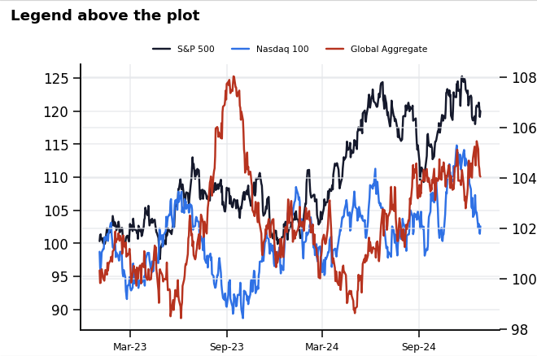
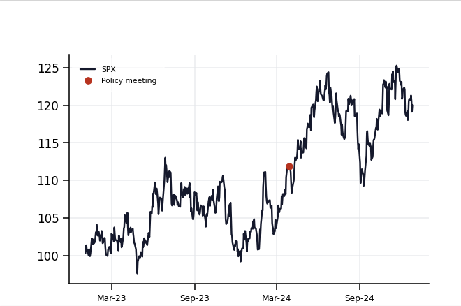
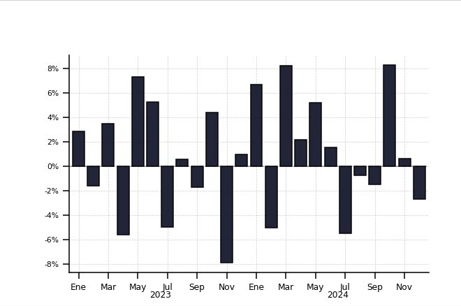
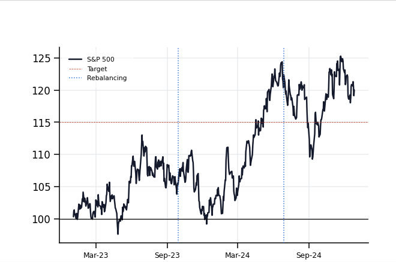
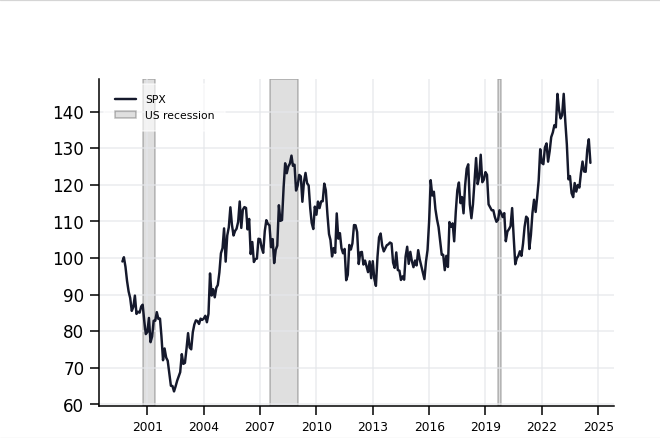

Legends, guides and reference lines¶
This page covers the elements that help to read a chart: legends, grid guides, reference levels, event lines and recession shading. All of them work on any chart that has an x-axis and can be chained after the chart method.
import numpy as np
import pandas as pd
import helpers_ps as hp
hp.set_graph_theme()
rng = np.random.default_rng(42)
dates = pd.bdate_range("2023-01-02", periods=520)
rets = rng.normal([0.0004, 0.0006, 0.0002], [0.009, 0.013, 0.004], size=(len(dates), 3))
prices = pd.DataFrame(
100 * np.exp(rets.cumsum(axis=0)),
index=dates,
columns=["SPX", "NDX", "AGG"],
)
Legends¶
add_legend() collects the labels of everything drawn on the active axis and on its right axis, plus any custom entries registered with add_legend_point(), removes duplicates and draws one legend.
| Parameter | Default | Description |
|---|---|---|
loc |
"upper left" |
Matplotlib location. |
bbox_to_anchor |
None |
Anchor to place the legend outside the plot, e.g. (0.5, -0.12). |
ncol |
1 |
Number of columns. |
fontsize |
7 |
Text size. |
frameon, edgecolor, facecolor, framealpha |
True, "white", "white", 0.6 |
Frame. |
include_right_axis |
True |
Also list the series of the right axis. |
legend_mode |
"all" |
"all" (default), "series" or "points" (only the custom markers registered through dot(label=...) / add_legend_point()). |
The text of each entry is the label of the series (the column name if omitted).
g = (
hp.GraphMtplt(prices)
.graph_line(series=[
{"ticker": "SPX", "label": "S&P 500"},
{"ticker": "NDX", "label": "Nasdaq 100"},
{"ticker": "AGG", "label": "Global Aggregate", "axis_side": "right", "color": "#B7331F"},
])
.add_legend(loc="upper center", bbox_to_anchor=(0.5, 1.12), ncol=3)
.add_title("Legend above the plot")
)

Custom legend points¶
add_legend_point() adds an entry without plotting anything: useful for events, signals or markers drawn with dot().
g = (
hp.GraphMtplt(prices)
.graph_line(series=[{"ticker": "SPX"}])
.dot(x_value="2024-03-28", y_value=float(prices.loc["2024-03-28", "SPX"]), color="#B7331F", size=45)
.add_legend_point(label="Policy meeting", color="#B7331F", marker="o", markersize=6)
.add_legend()
)

Guides (grid lines)¶
Guides are the light dashed grid lines that make values easier to read.
| Method | What it does | Main options |
|---|---|---|
horizontal_guides() |
Horizontal grid on the left, right or both y-axes, with an emphasized zero line. | side ("left", "right", "both"), mostrar_cero, linestyle, linewidth, color, alpha, zero_color, zero_linewidth... |
vertical_guides() |
Vertical grid on the x-axis. | linestyle, linewidth, color, alpha. |
returns = prices.pct_change().dropna().resample("ME").apply(lambda r: (1 + r).prod() - 1)
g = (
hp.GraphMtplt(returns)
.graph_bar(series=[{"ticker": "SPX"}], x_axis={"bbg_format": True, "tick_step": 2})
.config_yaxis(fmt=".0%")
.horizontal_guides(zero_color="black", zero_linewidth=1.2)
.vertical_guides()
)

Guides and the right axis
With two y-axes use horizontal_guides(side="both") to draw guides for both, or choose the side whose scale you want the grid to follow.
Reference lines¶
Reference lines mark levels (targets, thresholds, averages) and events (dates).
horizontal_lines()¶
| Parameter | Default | Description |
|---|---|---|
y_values |
required | One value or a list. |
side |
"left" |
Axis whose scale the values refer to ("left" / "right"). |
color, linestyle, linewidth, alpha |
"gray", None, 0.5, 1.0 |
Style. |
label |
None |
Legend label (applied to the first line). |
zorder |
4 |
Drawing order. |
vertical_lines()¶
| Parameter | Default | Description |
|---|---|---|
x_values |
required | One x value or a list (dates, numbers, categories). |
labels |
None |
Legend label(s): a string or a list (one per line). |
color, linestyle, linewidth, alpha |
"gray", None, 0.5, 1.0 |
Style. |
ymin, ymax |
0.0, 1.0 |
Vertical extent as a fraction of the axis. |
zorder |
4 |
Drawing order. |
g = (
hp.GraphMtplt(prices)
.graph_line(series=[{"ticker": "SPX", "label": "S&P 500"}])
.horizontal_lines([100], color="black", linewidth=0.8)
.horizontal_lines([115], color="#B7331F", linestyle="--", label="Target")
.vertical_lines(["2023-09-29", "2024-06-28"], color="#3075DB", linestyle=":", linewidth=1, labels="Rebalancing")
.add_legend()
)

Recessions¶
add_recessions() shades recession periods from the database bundled with the package (helpers_ps/Data/recessions.csv). Available countries: "United States" (default) and "Peru". It only works on date axes (datetime or Bloomberg-style).
monthly_idx = pd.date_range("2000-01-31", "2024-12-31", freq="ME")
long_history = pd.DataFrame(
{"SPX": 100 * np.exp(np.cumsum(rng.normal(0.006, 0.04, len(monthly_idx))))},
index=monthly_idx,
)
g = (
hp.GraphMtplt(long_history)
.graph_line(series=[{"ticker": "SPX"}], x_axis={"tick_step": 36, "fmt": "%Y"})
.tap(lambda graph: graph.add_recessions(controles={"color": "grey", "alpha": 0.25, "label": "US recession"}))
.add_legend()
)

add_recessions() ends the chain
When it draws, add_recessions() returns None instead of the graph object, so a method chained after it fails. Either call it last, or wrap it in tap() as above (tap runs a function and keeps the chain alive). Other countries: graph.add_recessions(country="Peru").
controles is passed to shade_x(): color, alpha, hatch, label, zorder. The default is gray with alpha=0.3.
To read the data without drawing:
recessions = hp.GraphMtplt().add_recessions(data_frame=True)
recessions.query("country == 'Peru'").tail(3)
country start_date end_date description
recesion_id
34 Peru 1998-01-01 1999-12-31 Asia + El Niño
35 Peru 2009-01-01 2009-12-31 Crisis global
36 Peru 2020-03-01 2020-12-31 COVID shock
Order matters
Call add_recessions() after the chart method: it needs the axis mode and limits that the chart creates. On non-date axes it raises TypeError; for countries without data, NotImplementedError.